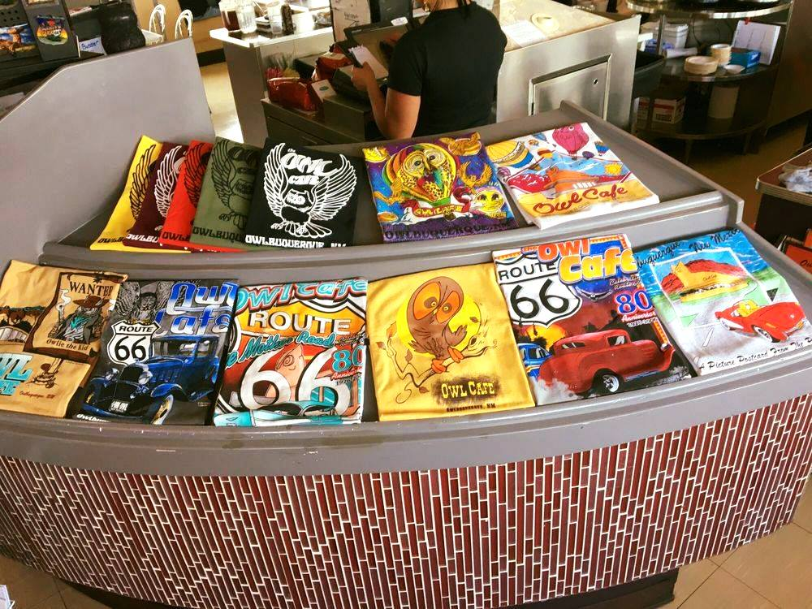

Hallo! Selamat datang di Gramedia kota Medan
Info Gramedia
Gramedia ini di kelelola langsung oleh pemerintah kota medan dengan persetujuan wali kota
Gramedia ini memberikan fasilitas kepada seluruh masyarakat kota medan untuk melakukan peminjaman buku dengan menggunakan metode online website.
Gramedia ini bisa menjadi “perpustakaan” gratis bagi orang orang yang doyan membaca komik. Di toko buku ini, seringkali terdapat komik atau buku yang segelnya sudah dibuka dan bisa dibaca oleh para pengunjung yang datang.
Buku yang tersedia
| No | Nama Penulis | Judul Buku | Jenis buku | Status |
|---|---|---|---|---|
| 1 | Jabir Bin Hayyan | "Dasar-Dasar Kimia Anorganik Non Logam - UNY Press" | Buku Paket | Tersedia |
| 2 | Jonathan Black | "Sejarah Dunia yang Disembunyikan" | Buku LKS | Tersedia |
| 3 | Jonathan Black | "Dragon Ball" | Komik | Tersedia |
| 4 | Devar Entertainment | "Rahasia Samudra" | Buku Ensiklopedia Anak | Tersedia |
| 5 | Andrea Hirata | "Laskar Pelangi" | Novel | Tersedia |